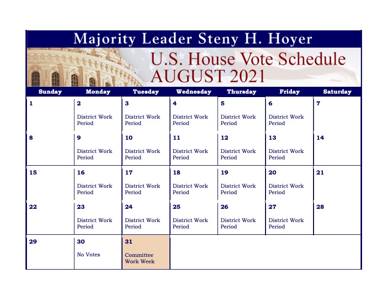

Last Updated 07.29.21
| date | url | title | |
|---|---|---|---|
| 0 | July 28, 2021 | https://www.fcc.gov/document/fcc-fines-18-tv-stations-refusing-negotiate-good-faith | FCC Fines 18 TV Stations for Refusing to Negotiate in Good Faith |
| 1 | July 28, 2021 | https://www.fcc.gov/document/carr-applauds-big-tech-accountability-legislative-package | Carr Applauds Big Tech Accountability Legislative Package |
| 2 | July 28, 2021 | https://www.fcc.gov/document/fcc-enrolls-4m-households-emergency-broadband-benefit-program | FCC Enrolls 4M+ Households in Emergency Broadband Benefit Program |
| 3 | July 26, 2021 | https://www.fcc.gov/document/carr-statement-fccs-grant-c-band-spectrum-licenses | Carr Statement on FCC's Grant of C-Band Spectrum Licenses |
| 4 | July 26, 2021 | https://www.fcc.gov/document/fcc-seeks-comment-issues-related-eeo-data-collection | FCC Seeks Comment on Issues Related to EEO Data Collection |
| 5 | July 26, 2021 | https://www.fcc.gov/document/fcc-announces-webinar-emergency-connectivity-fund-program-faqs | FCC Announces Webinar on Emergency Connectivity Fund Program FAQs |
| 6 | July 26, 2021 | https://www.fcc.gov/document/fcc-announces-over-311-million-broadband-acts-clean-rdof | FCC Announces Over $311 Million for Broadband, Acts to Clean Up RDOF |
| 7 | July 26, 2021 | https://www.fcc.gov/document/iwg-3-and-iwg-4-wac-revise-their-meeting-schedules | IWG-3 and IWG-4 of the WAC Revise Their Meeting Schedules |
| 8 | July 23, 2021 | https://www.fcc.gov/document/fcc-grants-c-band-spectrum-licenses | FCC Grants C-Band Spectrum Licenses |
| date | url | |
|---|---|---|
| 0 | 07/28/2021 | https://www.congress.gov/congressional-record/2021/7/28/daily-digest |
| 1 | 07/26/2021 | https://www.congress.gov/congressional-record/2021/7/26/daily-digest |
| 2 | 07/27/2021 | https://www.congress.gov/congressional-record/2021/7/27/daily-digest |
| category | date | title | url | summary | |
|---|---|---|---|---|---|
| 0 | Markups | 08/4/2021 | Executive Session | https://www.commerce.senate.gov/2021/8/executive-session | WASHINGTON, D.C.—U.S. Senator Maria Cantwell (D-WA), the Chair of the Senate Committee on Commerce, Science, and Transportation, will convene an executive session at 10:00 a.m. on Wednesday, August 4, 2021, to consider the following measures and nominations: |
| 1 | Press Release | 07/28/2021 | Cantwell, Wicker To Commerce Secretary Raimondo: Strengthen American Cybersecurity Defenses | https://www.commerce.senate.gov/2021/7/cantwell-wicker-to-commerce-secretary-raimondo-strengthen-american-cybersecurity-defenses | WASHINGTON, D.C.— U.S. Senator Maria Cantwell (D-WA), Chair of the Senate Commerce, Science, and Transportation Committee, and U.S. Senator Roger Wicker (R-MS) today wrote to Department of Commerce Secretary Gina Raimondo urging her to robustly confront growing threats to American cybersecurity and privacy. The letter follows a hearing that Chair Cantwell and Ranking Member Wicker convened on cybersecurity threats to America’s critical energy infrastructure. |
| 2 | Press Release | 07/28/2021 | Chair Cantwell Demands Swift Action on Residential Elevator Hazards at Confirmation Hearing for Consumer Product Safety Commission Nominees | https://www.commerce.senate.gov/2021/7/chair-cantwell-demands-swift-action-on-residential-elevator-hazards-at-confirmation-hearing-for-consumer-product-safety-commission-nominees | WASHINGTON, D.C.— During today’s hearing to consider the nominations of commissioners to the Consumer Product Safety Commission (CPSC), U.S. Senator Maria Cantwell (D-WA), Chair of the Senate Commerce, Science, and Transportation Committee, called on the nominees to take long-needed action to fix the safety hazards of residential elevators. In 2019, Sen. Cantwell issued a report highlighting the CPSC’s inaction following the deaths and serious injuries suffered by children in residential elevators. |
| 3 | Press Release | 07/27/2021 | Chair Cantwell On Cyber Threats to Energy Infrastructure: Colonial Pipeline Attack “The Tip of the Iceberg” | https://www.commerce.senate.gov/2021/7/chair-cantwell-on-cyber-threats-to-energy-infrastructure-colonial-pipeline-attack-the-tip-of-the-iceberg | U.S. Senator Maria Cantwell (D-WA), Chair of the Senate Commerce, Science, and Transportation Committee, today convened a hearing to further review the federal response to the cyberattack on Colonial Pipeline Company and examine what additional actions must be taken to strengthen America’s cybersecurity defenses and better protect our nation’s critical infrastructure. The Committee heard testimony from Transportation Security Administrator David Pekoske, Department of Transportation (DOT) Deputy Secretary Polly Trottenberg, and Acting Director of Homeland Security and Justice at the Government Accountability Office, Leslie Gordon. |
| 4 | Hearings | 08/4/2021 | Executive Session | https://www.commerce.senate.gov/2021/8/executive-session | WASHINGTON, D.C.—U.S. Senator Maria Cantwell (D-WA), the Chair of the Senate Committee on Commerce, Science, and Transportation, will convene an executive session at 10:00 a.m. on Wednesday, August 4, 2021, to consider the following measures and nominations: |
| 5 | Hearings | 07/28/2021 | Nomination Hearing | https://www.commerce.senate.gov/2021/7/nomination-hearing/2a8c8bf1-4e93-4e6f-9757-2e46d8af5695 | WASHINGTON, D.C.— U.S. Senator Maria Cantwell (D-WA), Chair of the Senate Committee on Commerce, Science, and Transportation, will convene a full committee hearing at 10:00 a.m. on Wednesday July 28, 2021 to consider the presidential nominations of Alexander Hoehn-Saric to be a Commissioner and Chair of the Consumer Product Safety Commission (CPSC); Mary T. Boyle to be a Commissioner of the CPSC; Richard Trumka, Jr. to be a Commissioner of the CPSC; and Grant Harris to be Assistant Secretary for Industry and Analysis at the Department of Commerce. |
| 6 | Hearings | 07/27/2021 | Pipeline Cybersecurity: Protecting Critical Infrastructure | https://www.commerce.senate.gov/2021/7/pipeline-cybersecurity-protecting-critical-infrastructure | WASHINGTON, D.C.— U.S. Senator Maria Cantwell (D-WA), Chair of the Senate Committee on Commerce, Science, and Transportation will convene a hearing titled “Pipeline Cybersecurity: Protecting Critical Infrastructure“ at 10:00 a.m. on Tuesday, July 27, 2021. The hearing will examine the current state of pipeline cybersecurity and the role that federal regulators play in protecting our nation’s critical infrastructure from malicious actors. This hearing will provide members an opportunity to examine recent actions taken in response to pipeline cyber incidents and gaps in our current oversight and regulatory structure. |
| category | date | url | content | |
|---|---|---|---|---|
| 0 | Legislation | 07/28/21 | https://www.congress.gov/bill/117th-congress/senate-bill/2516 | A bill to prohibit the United States International Development Finance Corporation from imposing restrictions on the source of energy used by power-generation projects intended to provide affordable electricity in IDA-eligible countries or IDA-blend countries and to require the Corporation to promote a technology- and fuel-neutral, all-of-the-above energy development strategy for such countries. |
| 1 | Legislation | 07/28/21 | https://www.congress.gov/bill/117th-congress/senate-resolution/310 | A resolution expressing solidarity with Cuban citizens demonstrating peacefully for fundamental freedoms, condemning the Cuban regime's acts of repression, and calling for the immediate release of arbitrarily detained Cuban citizens. |
| 2 | Legislation | 07/28/21 | https://www.congress.gov/bill/117th-congress/senate-bill/2494 | A bill to counter malign influence, require transparency, and promote accountability within the United Nations system, and for other purposes. |
| 3 | Legislation | 07/28/21 | https://www.congress.gov/bill/117th-congress/senate-bill/2297 | A bill to improve global health, and for other purposes. |
| 4 | Legislation | 07/28/21 | https://www.congress.gov/bill/117th-congress/senate-resolution/326 | A resolution commemorating the 200th anniversary of the independence of the Republic of Peru. |
| 5 | Legislation | 07/28/21 | https://www.congress.gov/bill/117th-congress/senate-bill/2509 | A bill to authorize the New Partnerships Initiative to expand and diversify the partner base of the United States Agency for International Development and to provide more entry points for organizations to work with USAID. |
| 6 | Legislation | 07/28/21 | https://www.congress.gov/bill/117th-congress/senate-bill/812 | A bill to direct the Secretary of State to develop a strategy to regain observer status for Taiwan in the World Health Organization, and for other purposes. |
| 7 | Legislation | 07/27/21 | https://www.congress.gov/bill/117th-congress/senate-resolution/322 | A resolution reaffirming the alliance between the United States and Bulgaria, congratulating Bulgaria on its July 11, 2021 parliamentary elections, and calling for continued progress in Bulgaria towards combating corruption, respecting the freedom of the press, and protecting minority rights. |
| 8 | Legislation | 07/27/21 | https://www.congress.gov/bill/117th-congress/senate-bill/2479 | A bill to withhold United States contributions to the United Nations Relief and Works Agency for Palestine Refugees in the Near East (UNRWA), and for other purposes. |
| 9 | Nominations | 07/28/21 | NaN | 2 nominations, beginning with Jeanne Frances Bailey, and ending with Bruce J. Zanin |
| 10 | Nominations | 07/28/21 | NaN | Mark Gitenstein, of Washington, to be Representative of the United States of America to the European Union, with the rank and status of Ambassador Extraordinary and Plenipotentiary. |
| 11 | Nominations | 07/28/21 | NaN | One nomination, beginning with Marc Clayton Gilkey, and ending with Marc Clayton Gilkey |
| 12 | Nominations | 07/28/21 | NaN | Patricia Mahoney, of Virginia, a Career Member of the Senior Foreign Service, Class of Minister-Counselor, to be Ambassador Extraordinary and Plenipotentiary of the United States of America to the Central African Republic. |
| 13 | Nominations | 07/28/21 | NaN | Jessica Lewis, of Ohio, to be an Assistant Secretary of State (Political-Military Affairs), vice R. Clarke Cooper. |
| 14 | Nominations | 07/28/21 | NaN | 2 nominations, beginning with Russell Anthony Duncan, and ending with Mark Clayton Prescott |
| 15 | Nominations | 07/28/21 | NaN | Laura S. H. Holgate, of Virginia, to be Representative of the United States of America to the Vienna Office of the United Nations, with the rank of Ambassador. |
| 16 | Nominations | 07/28/21 | NaN | Laura S. H. Holgate, of Virginia, to be Representative of the United States of America to the International Atomic Energy Agency, with the rank of Ambassador. |
| 17 | Nominations | 07/28/21 | NaN | 14 nominations, beginning with Wade C. Martin, and ending with Fernando Ospina |
| 18 | Nominations | 07/28/21 | NaN | Peter Hendrick Vrooman, of New York, a Career Member of the Senior Foreign Service, Class of Minister-Counselor, to be Ambassador Extraordinary and Plenipotentiary of the United States of America to the Republic of Mozambique. |
| 19 | Nominations | 07/28/21 | NaN | Julissa Reynoso Pantaleon, of New York, to be Ambassador Extraordinary and Plenipotentiary of the United States of America to the Kingdom of Spain, and to serve concurrently and without additional compensation as Ambassador Extraordinary and Plenipotentiary of the United States of America to the Principality of Andorra. |
| 20 | Nominations | 07/28/21 | NaN | Donald Lu, of California, a Career Member of the Senior Foreign Service, Class of Minister-Counselor, to be Assistant Secretary of State for South Asian Affairs, vice Nisha Desai Biswal. |
| 21 | Nominations | 07/28/21 | NaN | Kenneth Lee Salazar, of Colorado, to be Ambassador Extraordinary and Plenipotentiary of the United States of America to the United Mexican States. |
| 22 | Nominations | 07/28/21 | NaN | Marcela Escobari, of Massachusetts, to be an Assistant Administrator of the United States Agency for International Development, vice John Barsa. |
| 23 | Nominations | 07/28/21 | NaN | 41 nominations, beginning with Gabriel J. Allison, and ending with Amanda M. Zeidan |
| 24 | Nominations | 07/27/21 | NaN | Isobel Coleman, of New York, to be a Deputy Administrator of the United States Agency for International Development, vice Jenny A. McGee |
| 25 | Nominations | 07/27/21 | NaN | Lee Satterfield, of South Carolina, to be an Assistant Secretary of State (Educational and Cultural Affairs), vice Marie Royce. |
| 26 | Nominations | 07/27/21 | NaN | Christopher P. Lu, of Virginia, to be an Alternate Representative of the United States of America to the Sessions of the General Assembly of the United Nations, during his tenure of service as Representative of the United States of America to the United Nations for U.N. Management and Reform. |
| 27 | Nominations | 07/27/21 | NaN | Christopher P. Lu, of Virginia, to be Representative of the United States of America to the United Nations for U.N. Management and Reform, with the rank of Ambassador. |
| 28 | Nominations | 07/27/21 | NaN | Rufus Gifford, of Massachusetts, to be Chief of Protocol, and to have the rank of Ambassador during his tenure of service, vice Sean P. Lawler, resigned. |
| category | date | url | title | |
|---|---|---|---|---|
| 0 | Minority Press Release | 07/29/21 | https://www.banking.senate.gov/newsroom/minority/toomey-imposing-36-interest-rate-cap-on-all-consumers-would-harm-access-to-credit | Toomey: Imposing 36% Interest Rate Cap on All Consumers Would Harm Access to Credit |
| 1 | Kajority Press Release | 07/29/21 | https://www.banking.senate.gov/newsroom/majority/brown-passing-36-rate-cap-bill-would-protect-americans-from-debt-traps | \r\nBROWN: PASSING 36% RATE CAP BILL WOULD PROTECT AMERICANS FROM DEBT TRAPS |
| 2 | Minority Press Release | 07/28/21 | https://www.banking.senate.gov/newsroom/minority/banking-republicans-oppose-treasury-nominees-over-nord-stream-ii-ag | Banking Republicans Oppose Treasury Nominees Over Nord Stream II AG |
| 3 | Minority Press Release | 07/27/21 | https://www.banking.senate.gov/newsroom/minority/toomey-lawmakers-should-work-to-better-understand-potential-uses-of-cryptocurrencies | Toomey: Lawmakers Should Work to Better Understand Potential Uses of Cryptocurrencies |
| 4 | Kajority Press Release | 07/28/21 | https://www.banking.senate.gov/newsroom/majority/us-senators-seek-to-cap-consumer-loans-at-36 | U.S. Senators Seek to Cap Consumer Loans at 36% |
| 5 | Kajority Press Release | 07/27/21 | https://www.banking.senate.gov/newsroom/majority/brown-presses-cfpb-to-address-risks-to-consumers-from-fintechs-like-chime | Brown Presses CFPB to Address Risks to Consumers from Fintechs Like Chime |
| 6 | Kajority Press Release | 07/27/21 | https://www.banking.senate.gov/newsroom/majority/brown-cryptocurrencies-put-americans-hard-earned-money-at-risk | Brown: Cryptocurrencies Put Americans’ Hard-earned Money at Risk |
| 7 | Hearings | 08/03/21 02:30PM | https://www.banking.senate.gov/hearings/protecting-consumers-from-financial-fraud-and-scams-in-the-pandemic-recovery-economy | Protecting Consumers from Financial Fraud and Scams in the Pandemic Recovery Economy |
| 8 | Hearings | 08/03/21 10:00AM | https://www.banking.senate.gov/hearings/oversight-of-regulators-does-our-financial-system-work-for-everyone | Oversight of Regulators: Does our Financial System Work for Everyone? |
| 9 | Hearings | 07/29/21 10:00AM | https://www.banking.senate.gov/hearings/protecting-americans-from-debt-traps-by-extending-the-militarys-36-interest-rate-cap-to-everyone | Protecting Americans from Debt Traps by Extending the Military's 36% Interest Rate Cap to Everyone |
| 10 | Hearings | 07/27/21 03:00PM | https://www.banking.senate.gov/hearings/protecting-student-loan-borrowers-and-the-economy-in-upcoming-transitions | Protecting Student Loan Borrowers and the Economy in Upcoming Transitions |
| 11 | Hearings | 07/27/21 10:00AM | https://www.banking.senate.gov/hearings/cryptocurrencies-what-are-they-good-for | Cryptocurrencies: What are they good for? |
| category | date | url | title | |
|---|---|---|---|---|
| 0 | majority | 07/28/21 | https://www.finance.senate.gov/chairmans-news/wyden-calls-on-oregon-insurers-to-provide-seniors-with-cooling-and-air-filters- | Wyden Calls on Oregon Insurers to Provide Seniors With Cooling and Air Filters |
| 1 | minority | 07/28/21 | https://www.finance.senate.gov/ranking-members-news/crapo-statement-at-retirement-hearing | Crapo Statement at Retirement Hearing |
| 2 | majority | 07/28/21 | https://www.finance.senate.gov/chairmans-news/wyden-neal-release-new-data-showing-explosion-in-use-of-mega-ira-accounts-by-wealthy | Wyden, Neal Release New Data Showing Explosion in Use Of Mega-IRA Accounts by Wealthy |
| 3 | majority | 07/28/21 | https://www.finance.senate.gov/chairmans-news/wyden-statement-at-finance-committee-hearing-on-retirement-legislation | Wyden Statement at Finance Committee Hearing on Retirement Legislation |
| 4 | minority | 07/27/21 | https://www.finance.senate.gov/ranking-members-news/crapo-whitehouse-reed-panetta-introduce-legislation-to-encourage-innovation-in-the-clean-energy-sector | Crapo, Whitehouse, Reed, Panetta Introduce Legislation to Encourage Innovation in the Clean Energy Sector |
| 5 | minority | 07/27/21 | https://www.finance.senate.gov/ranking-members-news/crapo-statement-at-usmca-hearing | Crapo Statement at USMCA Hearing |
| 6 | hearings | 07/28/21 | https://www.finance.senate.gov/hearings/building-on-bipartisan-retirement-legislation-how-can-congress-help | Building on Bipartisan Retirement Legislation: How Can Congress Help? |
| 7 | hearings | 07/27/21 | https://www.finance.senate.gov/hearings/implementation-and-enforcement-of-the-united-states_mexico--canada-agreement-one-year-after-entry-into-force | Implementation and Enforcement of the United States – Mexico – Canada Agreement: One Year After Entry into Force |
| category | date | url | title | |
|---|---|---|---|---|
| 0 | hearings | 8/05/21 | http://www.hsgac.senate.gov/hearings/examining-the-threat-of-racially-ethnically-religiously-and-politically-motivated-attacks-part-ii | Full Committee Hearing : Examining the Threat of Racially, Ethnically, Religiously, and Politically Motivated Attacks, Part II |
| 1 | majority | 7/27/21 | http://www.hsgac.senate.gov/media/majority-media/peters-raises-cybersecurity-and-northern-border-issues-with-dhs-secretary-mayorkas | Peters Raises Cybersecurity and Northern Border Issues with DHS Secretary Mayorkas |
| 2 | hearings | 8/04/21 | http://www.hsgac.senate.gov/08/04/2021/business-meeting- | Business Meeting : Business Meeting |
| 3 | hearings | 8/03/21 | http://www.hsgac.senate.gov/hearings/domestic-terrorism-and-violent-extremism-examining-the-threat-of-racially-ethnically-religiously-and-politically-motivated-attacks-part-i | Full Committee Hearing : Domestic Terrorism and Violent Extremism: Examining the Threat of Racially, Ethnically, Religiously, and Politically Motivated Attacks, Part I |
| 4 | hearings | 7/28/21 | http://www.hsgac.senate.gov/hearings/07/28/2021/business-meeting- | Business Meeting : POSTPONED: Business Meeting |
| 5 | hearings | 7/27/21 | http://www.hsgac.senate.gov/hearings/resources-and-authorities-needed-to-protect-and-secure-the-homeland | Full Committee Hearing : Resources and Authorities Needed to Protect and Secure the Homeland |
| 6 | minority | 7/29/21 | http://www.hsgac.senate.gov/media/minority-media/portman-peters-introduce-bipartisan-legislation-to-direct-dhs-to-research-supply-chain-vulnerabilities-that-threaten-national-security | Portman, Peters Introduce Bipartisan Legislation to Direct DHS to Research Supply Chain Vulnerabilities That Threaten National Security |
| 7 | minority | 7/27/21 | http://www.hsgac.senate.gov/media/minority-media/portman-presses-dhs-secretary-mayorkas-on-decrease-in-unlawful-migrant-arrests-as-us-faces-worst-border-crisis-in-two-decades | Portman Presses DHS Secretary Mayorkas on Decrease in Unlawful Migrant Arrests as U.S. Faces Worst Border Crisis in Two Decades |
| 8 | minority | 7/27/21 | http://www.hsgac.senate.gov/media/minority-media/portman-on-border-crisis-what-were-doing-is-not-working-and-the-biden-administration-must-change-course | Portman on Border Crisis: What We’re Doing Is Not Working and the Biden Administration Must Change Course |
| 9 | minority | 7/26/21 | http://www.hsgac.senate.gov/media/minority-media/portman-announces-nearly-5-million-in-federal-security-resources-for-faith-based-and-nonprofit-institutions-across-ohio | Portman Announces Nearly $5 Million In Federal Security Resources For Faith-Based & Nonprofit Institutions Across Ohio |
| category | date | url | title | |
|---|---|---|---|---|
| 0 | minority | 07/28/21 | https://www.judiciary.senate.gov/press/rep/releases/grassley-questions-witnesses-calls-out-large-meatpackers-on-unfair-practices-at-judiciary-committee-hearing | Grassley Questions Witnesses, Calls out Large Meatpackers on Unfair Practices at Judiciary Committee Hearing |
| 1 | minority | 07/28/21 | https://www.judiciary.senate.gov/grassley-at-judiciary-hearing-on-beefing-up-competition-in-meat-supply-chain | Grassley At Judiciary Hearing On Beefing Up Competition In Meat Supply Chain |
| 2 | minority | 07/27/21 | https://www.judiciary.senate.gov/grassley-addresses-our-domestic-terrorism-strategy | Grassley Addresses Our Domestic Terrorism Strategy |
| 3 | minority | 07/27/21 | https://www.judiciary.senate.gov/grassley-statement-at-ransomware-hearing | Grassley Statement at Ransomware Hearing |
| 4 | hearings | 08/03/21 | https://www.judiciary.senate.gov/meetings/breaking-the-logjam-principles-and-practice-of-congressional-oversight-and-executive-privilege | Breaking the Logjam: Principles and Practice of Congressional Oversight and Executive Privilege |
| 5 | hearings | 08/03/21 | https://www.judiciary.senate.gov/meetings/student-loan-bankruptcy-reform | Student Loan Bankruptcy Reform |
| 6 | hearings | 07/29/21 | https://www.judiciary.senate.gov/meetings/07/22/2021/executive-business-meeting | Executive Business Meeting |
| 7 | hearings | 07/28/21 | https://www.judiciary.senate.gov/meetings/beefing-up-competition-examining-americas-food-supply-chain | Beefing up Competition: Examining America’s Food Supply Chain |
| 8 | hearings | 07/28/21 | https://www.judiciary.senate.gov/meetings/07/21/2021/nominations | Nominations |
| 9 | hearings | 07/27/21 | https://www.judiciary.senate.gov/meetings/america-under-cyber-siege-preventing-and-responding-to-ransomware-attacks | America Under Cyber Siege: Preventing and Responding to Ransomware Attacks |
| date | title | url | summary | |
|---|---|---|---|---|
| 0 | July 28, 2021 | Chairman Schiff Statement on White House Action to Combat Cyber Threats | https://intelligence.house.gov/news/documentsingle.aspx?DocumentID=1152 | Washington, D.C. – Today, Congressman Adam Schiff (D-Calif.), Chairman of the House Permanent Select Committee on Intelligence, issued the following statement: “The newly announced White House action to combat cyber-attacks against our critical infrastructure is essential to addressing the rising threat to systems our country counts on every day – from water supplies and the electrical grid, to tr... |
| category | date | title | url | |
|---|---|---|---|---|
| 0 | Hearings | 07/29/2021 | Hearing on "The Path Forward: Advancing Treatments and Cures for Neurodegenerative Diseases | https://energycommerce.house.gov/committee-activity/hearings/hearing-on-the-path-forward-advancing-treatments-and-cures-for |
| 1 | Press Release | Jul 29, 2021 | Pallone Opening Remarks at Hearing on Advancing Treatments and Cures for Neurodegenerative Diseases | https://energycommerce.house.gov/newsroom/press-releases/pallone-opening-remarks-at-hearing-on-advancing-treatments-and-cures-for |
| 2 | Press Release | Jul 28, 2021 | Pallone Opening Remarks at Legislative Hearing with FTC Commissioners | https://energycommerce.house.gov/newsroom/press-releases/pallone-opening-remarks-at-legislative-hearing-with-ftc-commissioners |
| 3 | Press Release | Jul 27, 2021 | 139 Lawmakers Urge EPA to Reinstate Waiver for California’s Clean Car Standards | https://energycommerce.house.gov/newsroom/press-releases/139-lawmakers-urge-epa-to-reinstate-waiver-for-california-s-clean-car |
| 4 | Press Release | Jul 27, 2021 | Pallone Opening Remarks at Hearing on Federal Energy Regulatory Commission Oversight | https://energycommerce.house.gov/newsroom/press-releases/pallone-opening-remarks-at-hearing-on-federal-energy-regulatory-commission |
| 5 | Hearings | 07/28/2021 | Hearing on "Transforming the FTC: Legislation to Modernize Consumer Protection" | https://energycommerce.house.gov/committee-activity/hearings/hearing-on-transforming-the-ftc-legislation-to-modernize-consumer |
| 6 | Hearings | 07/27/2021 | Hearing on "The Changing Energy Landscape: Oversight of FERC" | https://energycommerce.house.gov/committee-activity/hearings/hearing-on-the-changing-energy-landscape-oversight-of-ferc |
| category | date | title | url | summary | |
|---|---|---|---|---|---|
| 0 | Markups | July 28, 2021 | Markup - H.R. 935; H.R. 2265; H.R. 3332; H.R. 3555; H.R. 4590; H.R. 4616; H.R. 4617; H.R. 4618; H.R. 4619; H.R. 4620 and H.R. 4685 | https://financialservices.house.gov/calendar/EventSingle.aspx?EventID=408113 | Full Committee |
| 1 | Press Release | July 28, 2021 | Waters Opening Statement at July Full Committee Markup | https://financialservices.house.gov/news/documentsingle.aspx?DocumentID=408259 | Today, Congresswoman Maxine Waters (D-CA), Chairwoman of the House Committee on Financial Services, gave the following opening statement at a full Committee hybrid markup. Since the start of the 117th Congress, this Committee has marked up 21 bills and has held five markups. Today, this Committee will mark up 11 more bills. As Chairwoman of this Committee, I am so very pleased to advance many stro... |
| 2 | Press Release | July 28, 2021 | Waters on NAHASDA Reauthorization: This Fight Is About Fairness and Equality | https://financialservices.house.gov/news/documentsingle.aspx?DocumentID=408258 | Congresswoman Maxine Waters (D-CA), Chairwoman of the House Committee on Financial Services, gave the following statement at a Subcommittee on Housing, Community Development and Insurance hearing entitled, “NAHASDA Reauthorization: Addressing Historic Disinvestment and the Ongoing Plight of the Freedmen in Native American Communities.” Thank you, Chairman Cleaver, for convening this important hear... |
| 3 | Press Release | July 27, 2021 | Waters on Central Bank Digital Currencies: It Is Vital That Our Central Bank Has Powerful Tools to Achieve Its Mandate | https://financialservices.house.gov/news/documentsingle.aspx?DocumentID=408256 | Today, Congresswoman Maxine Waters (D-CA), Chairwoman of the House Committee on Financial Services, gave the following statement at a Subcommittee on National Security, International Development and Monetary Policy hearing entitled, “The Promises and Perils of Central Bank Digital Currencies.” Thank you, Chairman Himes for hosting this hearing, part of a series that this Committee has been holding... |
| 4 | Press Release | July 27, 2021 | Chairwoman Waters Meets with Secretary Yellen, Discusses Implementation of Rental Assistance | https://financialservices.house.gov/news/documentsingle.aspx?DocumentID=408255 | Today, Congresswoman Maxine Waters (D-CA), Chairwoman of the House Committee on Financial Services, met with Treasury Secretary Janet Yellen to discuss a variety of important issues including the implementation of emergency rental assistance. “This morning, I met with Secretary Yellen to discuss my priorities and the many ways in which we can work together to ensure that our country is on a path t... |
| 5 | Hearings | July 27, 2021 | NAHASDA Reauthorization: Addressing Historic Disinvestment and the Ongoing Plight of the Freedmen in Native American Communities | https://financialservices.house.gov/calendar/EventSingle.aspx?EventID=408112 | Subcommittee on Housing, Community Development and Insurance |
| 6 | Hearings | July 27, 2021 | The Promises and Perils of Central Bank Digital Currencies | https://financialservices.house.gov/calendar/EventSingle.aspx?EventID=408111 | Subcommittee on National Security, International Development and Monetary Policy |
| category | date | time | title | urls | |
|---|---|---|---|---|---|
| 0 | Press Release | 7/26/21 | NaN | Meeks, Deutch Issue Statement on Developments in Tunisia | https://foreignaffairs.house.gov/press-releases?ID=CB58430F-72AF-4991-90AD-F85BB98CE67B |
| 1 | Press Release | 7/23/21 | NaN | Meeks Issues Statement on Today’s Presidential Delegation to Haiti | https://foreignaffairs.house.gov/press-releases?ID=D99710E5-944C-4D8F-807F-8C7B18E7560F |
| 2 | Markup | 7/28/21 | 10:00 AM | MARKUP: H.R. 4589, H.R. 1199, H.Res. 496, H.R. 2946, H.R. 4250, H.Res. 497, H.R. 4526, H.Res. 549, H.Res. 547, H.Res. 376 | https://foreignaffairs.house.gov/markups?ID=F759C621-1AC2-4887-A2D9-BA3E356207B2 |
| 3 | Hearing | 7/29/21 | 2:00 PM | Renewable Energy Transition: A Case Study of How International Collaboration on Offshore Wind Technology Benefits American Workers | https://foreignaffairs.house.gov/hearings?ID=9399F384-0CCF-4D8E-AAA7-0E59F9BC8F66 |
| 4 | Hearing | 7/29/21 | 11:00 AM | Lebanon: Assessing Political Paralysis, Economic Crisis and Challenges for U.S. Policy | https://foreignaffairs.house.gov/hearings?ID=4463B4E8-8C61-430B-AA6D-C4C28EC531B3 |
| 5 | Hearing | 7/28/21 | 10:00 AM | MARKUP: H.R. 4589, H.R. 1199, H.Res. 496, H.R. 2946, H.R. 4250, H.Res. 497, H.R. 4526, H.Res. 549, H.Res. 547, H.Res. 376 | https://foreignaffairs.house.gov/hearings?ID=F759C621-1AC2-4887-A2D9-BA3E356207B2 |
| 6 | Hearing | 7/27/21 | 2:00 PM | Implementation of the Global Child Thrive Act and Investing in Early Childhood Development | https://foreignaffairs.house.gov/hearings?ID=31B6E9BD-6CDD-4246-BF48-D63FC2FC4291 |
| 7 | Hearing | 7/27/21 | 10:00 AM | Scenarios in a Cross-Strait Conflict | https://foreignaffairs.house.gov/hearings?ID=E54BDADE-326F-4889-B6FC-D0791DD06FC7 |
| category | date | title | url | |
|---|---|---|---|---|
| 0 | Press Release | 07/28/21 | Chairs Thompson, Clarke Statement on President Biden’s Action to Secure Critical Infrastructure Control Systems | https://homeland.house.gov/news/press-releases/chairs-thompson-clarke-statement-on-president-bidens-action-to-secure-critical-infrastructure-control-systems |
| 1 | Markup | Jul 28 2021 | Markup of H.R. 903, 2915, 4426, 4089, 4094, 4363, 4209, 4611, 4691, 4682 | https://homeland.house.gov/activities/markups/markup-of-hr-903-2915-4426-4089-4094-4363-4209-4611 |
| category | date | title | url | |
|---|---|---|---|---|
| 0 | Hearings | July 29, 2021 | Enabling Mission Success from the Ground Up: Addressing NASA’s Urgent Infrastructure Needs | https://science.house.gov/hearings/enabling-mission-success-from-the-ground-up-addressing-nasas-urgent-infrastructure-needs |
| 1 | Markups | July 27, 2021 | Full Committee Markup of H.R. 4609, H.R. 3858, H.R. 4588, H.R. 4606, H.R. 4599 | https://science.house.gov/markups/full-committee-markup-of-hr-4609-hr-3858-hr-4588-hr-4606-hr-4599 |
| 2 | News | July 27, 2021 | Chairwoman Johnson and Ranking Member Lucas Celebrate Successful Markup of Five Bipartisan Innovation Bills | https://science.house.gov/news/press-releases/chairwoman-johnson-and-ranking-member-lucas-celebrate-successful-markup-of-five-bipartisan-innovation-bills- |
| 3 | News | July 26, 2021 | Representatives Foster and Obernolte Urge OSTP Examine Nation’s Lab Biosafety Policies | https://science.house.gov/news/press-releases/representatives-foster-and-obernolte-urge-ostp-examine-nations-lab-biosafety-policies- |
| 4 | News | July 23, 2021 | Science Committee Members Ross and Meijer Introduce Bipartisan Legislation to Facilitate Commercial Application of Clean Energy Technology | https://science.house.gov/news/press-releases/science-committee-members-ross-and-meijer-introduce-bipartisan-legislation-to-facilitate-commercial-application-of-clean-energy-technology- |
| category | date | title | url | |
|---|---|---|---|---|
| 0 | Majority Hearings | Jul 29 2021 | NaN | https://transportation.house.gov/committee-activity/hearings/assessing-the-federal-governments-covid-19-relief-and_response-efforts-and-its-impact |
| 1 | Majority Hearings | Jul 28 2021 | NaN | https://transportation.house.gov/committee-activity/hearings/07/26/2021/full-committee-markup |
| 2 | Minority Markups | July 28, 2021 | Full Committee Markup (July 28, 2021) | https://republicans-transportation.house.gov/calendar/EventSingle.aspx?EventID=405515 |
| 3 | Minority Hearings | July 29, 2021 | Assessing the Federal Government’s COVID-19 Relief and Response Efforts and its Impact | https://republicans-transportation.house.gov/calendar/EventSingle.aspx?EventID=405516 |
| 4 | Minority Press Releases | July 29, 2021 | Graves Statement from Hearing Examining the Impacts of the Government’s COVID-19 Relief and Response Efforts | https://republicans-transportation.house.gov/news/documentsingle.aspx?DocumentID=405521 |
| 5 | Minority Press Releases | July 28, 2021 | Committee Approves E-BRIDGE Act to Improve Rural Broadband and Other Legislation | https://republicans-transportation.house.gov/news/documentsingle.aspx?DocumentID=405520 |
| 6 | Majority Markups | Jul 28 2021 | NaN | https://transportation.house.gov/committee-activity/hearings/07/26/2021/full-committee-markup |
| 7 | Majority Press Releases | July 29, 2021 | Chair DeFazio Statement from Committee Hearing to Assess the Federal Government’s COVID-19 Relief and Response Efforts | https://transportation.house.gov/news/press-releases/chair-defazio-statement-from-committee-hearing-to-assess-the-federal-governments-covid-19-relief-and-response-efforts |
| 8 | Majority Press Releases | July 28, 2021 | T&I Committee Advances Multiple Bills During Markup, Including Legislation to Prevent a Race to the Bottom in International Civil Aviation | https://transportation.house.gov/news/press-releases/tandi-committee-advances-multiple-bills-during-markup-including-legislation-to-prevent-a-race-to-the-bottom-in-international-civil-aviation |
| 9 | Majority Press Releases | July 27, 2021 | Chairs DeFazio and Napolitano Applaud the Biden EPA’s Move to Strengthen Clean Water Protections Against Pollution from Coal-Fired Power Plants | https://transportation.house.gov/news/press-releases/chairs-defazio-and-napolitano-applaud-the-biden-epas-move-to-strengthen-clean-water-protections-against-pollution-from-coal-fired-power-plants |
| 10 | Majority Press Releases | July 26, 2021 | T&I Chair DeFazio Challenges Proposed Canadian National and Kansas City Southern Railroad Merger Trust | https://transportation.house.gov/news/press-releases/tandi-chair-defazio-challenges-proposed-canadian-national-and-kansas-city-southern-railroad-merger-trust |
| 11 | Majority Press Releases | July 26, 2021 | Chair DeFazio Introduces Legislation to Name the Department of Transportation After Secretary Norman Yoshio Mineta | https://transportation.house.gov/news/press-releases/chair-defazio-introduces-legislation-to-name-the-department-of-transportation-after-secretary-norman-yoshio-mineta- |
| 12 | Majority Press Releases | July 26, 2021 | House Committee on Transportation and Infrastructure to Hold Markup | https://transportation.house.gov/news/press-releases/07/26/2021/house-committee-on-transportation-and-infrastructure-to-hold-markup |
| 13 | Majority Press Releases | July 23, 2021 | Chair DeFazio Announces Committee Hearing to Assess the Federal Government’s COVID-19 Relief and Response Efforts | https://transportation.house.gov/news/press-releases/chair-defazio-announces-committee-hearing-to-assess-the-federal-governments-covid-19-relief-and-response-efforts |
| category | date | title | url | description | |
|---|---|---|---|---|---|
| 0 | Press Releases | 07.29.2021 | Leader Guthrie Calls for Further Innovation In Fight Against Neurodegenerative Diseases | https://republicans-energycommerce.house.gov/news/leader-guthrie-calls-for-further-innovation-in-fight-against-neurodegenerative-diseases/ | Washington, D.C. — Subcommittee on Health Republican Leader Brett Guthrie (R-KY) delivered opening remarks at Thursday’s Subcommittee hearing on treatments and cures for neurodegenerative diseases. |
| 1 | Press Releases | 07.29.2021 | Leader Rodgers: Lifesaving Research will Stall with Speaker Pelosi’s Radical Government Price Controls | https://republicans-energycommerce.house.gov/news/leader-rodgers-lifesaving-research-will-stall-with-speaker-pelosis-radical-government-price-controls/ | Washington, D.C.— Republican Leader of the House Energy and Commerce Committee Cathy McMorris Rodgers (R-WA) delivered the following remarks in a Health Subcommittee hearing entitled, “The Path Forward: Advancing Treatments and Cures for Neurodegenerative Diseases.” |
| 2 | Press Releases | 07.28.2021 | E&C Republicans Announce Next Phase of Their Effort to Hold Big Tech Accountable | https://republicans-energycommerce.house.gov/news/press-release/ec-republicans-announce-next-phase-of-their-effort-to-hold-big-tech-accountable/ | Washington, D.C. — House Energy and Commerce Committee Republican Leader Cathy McMorris Rodgers issued the following statement on a comprehensive package of discussion draft bills to hold Big Tech accountable by improving transparency and content moderation accountability, reforming Section 230 of the Communications Decency Act, promoting competition, and preventing illegal and harmful activity on their platforms. |
| 3 | Press Releases | 07.28.2021 | Rodgers, Jordan Release New Legislation to Rein in Big Tech Abuses of Section 230 | https://republicans-energycommerce.house.gov/news/press-release/rodgers-jordan-release-new-legislation-to-rein-in-big-tech-abuses-of-section-230/ | Washington, D.C. — House Energy and Commerce Committee Republican Leader Cathy McMorris Rodgers and House Judiciary Committee Ranking Member Jim Jordan (R-OH) released the following statement regarding their draft discussion bill to rein in Big Tech abuses of Section 230 protections. |
| 4 | Press Releases | 07.28.2021 | Leader Rodgers Opening Remarks at Subcommittee Hearing With Federal Trade Commission | https://republicans-energycommerce.house.gov/news/leader-rodgers-opening-remarks-at-subcommittee-hearing-with-federal-trade-commission/ | Washington, D.C. — Energy and Commerce Committee Republican Leader Cathy McMorris Rodgers (R-WA) delivered remarks in today’s Consumer Protection and Commerce Subcommittee hearing with the Federal Trade Commission (FTC). |
| 5 | Press Releases | 07.28.2021 | Leader Bilirakis Opening Remarks at Hearing With Federal Trade Commission | https://republicans-energycommerce.house.gov/news/leader-bilirakis-opening-remarks-at-hearing-with-federal-trade-commission/ | Washington, D.C. — House Energy and Commerce Republican Leader for Consumer Protection and Commerce Gus Bilirakis (R-FL) delivered opening remarks at today’s subcommittee hearing with the members of the Federal Trade Commission (FTC). |
| 6 | Press Releases | 07.27.2021 | Leader Rodgers Statement on CDC Mask Guidance | https://republicans-energycommerce.house.gov/news/leader-rodgers-statement-on-cdc-mask-guidance/ | Washington, D.C.—House Energy and Commerce Republican Leader Cathy McMorris Rodgers (R-WA) released the following statement regarding the Centers of Disease Control and Prevention’s (CDC) plans to update mask guidance for vaccinated people to wear masks indoors: |
| 7 | Press Releases | 07.27.2021 | Leader Upton Remarks at Hearing With Federal Energy Regulatory Commission | https://republicans-energycommerce.house.gov/news/leader-upton-remarks-at-hearing-with-federal-energy-regulatory-commission/ | Washington, D.C. — Energy Subcommittee Republican Leader Fred Upton (R-MI) delivered opening remarks at today’s Energy Subcommittee hearing with the Federal Energy Regulatory Commission (FERC). |
| 8 | Hearings | July 29, 2021 | The Path Forward: Advancing Treatments and Cures for Neurodegenerative Diseases | https://republicans-energycommerce.house.gov/hearings/the-path-forward-advancing-treatments-and-cures-for-neurodegenerative-diseases/ | https://www.youtube.com/watch?v=0WaKGgk_61g |
| 9 | Hearings | July 28, 2021 | Transforming the FTC: Legislation to Modernize Consumer Protection | https://republicans-energycommerce.house.gov/hearings/transforming-the-ftc-legislation-to-modernize-consumer-protection/ | https://youtu.be/samSHD0uj4Y |
| 10 | Hearings | July 27, 2021 | The Changing Energy Landscape: Oversight of FERC | https://republicans-energycommerce.house.gov/hearings/the-changing-energy-landscape-oversight-of-ferc/ | https://youtu.be/qIZFPzkba-E |
| category | date | title | url | summary | |
|---|---|---|---|---|---|
| 0 | Press Releases | 07.28.21 | MEDIA ADVISORY: McCaul to Join Bipartisan Press Conference to Call for Release of Trevor Reed and Paul Whelan | https://gop-foreignaffairs.house.gov/press-release/media-advisory-mccaul-to-join-bipartisan-press-conference-to-call-for-release-of-trevor-reed-and-paul-whelan/ | Washington, DC –Tomorrow, July 29, 2021, at 10:30AM, House Foreign Affairs Committee Lead Republican Michael McCaul (R-TX), Reps. August Pfluger (R-TX), Haley Stevens (D-MI), Tim Walberg (R-MI),… |
| 1 | Hearings | Wednesday, July 28, 2021 | Markup of H.R. 4589, H.R. 4693, H.R. 1199, H.Res. 496, H.R. 2946, H.R. 4250, H.Res. 497, H.R. 4526, H.Res. 549, H.Res. 547, H.Res. 376, H.R. 4686 | https://gop-foreignaffairs.house.gov/markup/markup-of-various-measures-5/ | NaN |
| 2 | Press Releases | 07.28.21 | McCaul, Blackburn Introduce the United Nations Transparency and Accountability Act | https://gop-foreignaffairs.house.gov/press-release/mccaul-blackburn-introduce-the-united-nations-transparency-and-accountability-act/ | Washington, DC – House Foreign Affairs Committee Lead Republican Michael McCaul (R-TX) and U.S. Senator Marsha Blackburn (R-TN) introduced the United Nations Transparency and Accountability Act to… |
| 3 | Press Releases | 07.27.21 | McCaul Statement on Events in Tunisia | https://gop-foreignaffairs.house.gov/press-release/mccaul-statement-on-events-in-tunisia/ | Washington, D.C. – House Foreign Affairs Committee Lead Republican Michael McCaul has released the following statement on recent events in Tunisia. |
| 4 | Press Releases | 07.27.21 | McCaul, McCarthy, and Members of Leader’s Advisory Group on Cuba Send Letter to Biden | https://gop-foreignaffairs.house.gov/press-release/mccaul-mccarthy-and-members-of-leaders-advisory-group-on-cuba-send-letter-to-biden/ | Washington, DC – House Foreign Affairs Committee Lead Republican Michael McCaul, Leader Kevin McCarthy, and members of the Leader’s Advisory Team on Cuba sent a letter to the Biden administration… |
| 5 | Press Releases | 07.26.21 | McCaul, Meeks, Kim, Houlahan Introduce the Global Malnutrition Prevention and Treatment Act of 2021 | https://gop-foreignaffairs.house.gov/press-release/mccaul-meeks-kim-houlahan-introduce-the-global-malnutrition-prevention-and-treatment-act-of-2021/ | Washington, DC – Today, House Foreign Affairs Committee Lead Republican Michael McCaul (R-TX), Chairman Gregory W. Meeks (D-NY), and Reps. Young Kim (R-CA) and Chrissy Houlahan (D-PA) introduced… |
| 6 | Press Releases | 07.26.21 | McCaul, Salazar, and Malliotakis Join Peaceful Protesters Demanding Solidarity With the Cuban People | https://gop-foreignaffairs.house.gov/press-release/mccaul-salazar-and-malliotakis-join-peaceful-protesters-demanding-solidarity-with-the-cuban-people/ | Washington D.C.- Today, House Foreign Affairs Committee Lead Republican Michael McCaul (R-TX), Reps. Maria Elvira Salazar (R-FL), Nicole Malliotakis (R-NY), and their colleagues joined members of the… |
| 7 | Press Releases | 07.25.21 | MEDIA ADVISORY: McCaul, Salazar, Malliotakis, and Diaz-Balart To Join Peaceful Protestors Demanding Solidarity With the Cuban People | https://gop-foreignaffairs.house.gov/press-release/media-advisory-mccaul-salazar-malliotakis-and-diaz-balart-to-join-peaceful-protestors-demanding-solidarity-with-the-cuban-people/ | Washington, DC – Tomorrow, House Foreign Affairs Committee Lead Republican Michael McCaul (R-TX), Reps. Maria Elvira Salazar (R-FL), Nicole Malliotakis (R-NY), and Mario Diaz-Balart (R-FL), and… |
| 8 | Press Releases | 07.23.21 | McCaul Again Calls for Congressional Investigation into Origins of COVID | https://gop-foreignaffairs.house.gov/press-release/mccaul-again-calls-for-congressional-investigation-into-origins-of-covid/ | Washington, DC – House Foreign Affairs Committee Lead Republican Michael McCaul released the following statement after the Biden Administration said it was “deeply disappointed” the… |
| 9 | Markups | Thursday, July 29, 2021 | Renewable Energy Transition: A Case Study of How International Collaboration on Offshore Wind Technology Benefits American Workers | https://gop-foreignaffairs.house.gov/hearing/renewable-energy-transition-a-case-study-of-how-international-collaboration-on-offshore-wind-technology-benefits-american-workers/ | NaN |
| 10 | Markups | Tuesday, July 27, 2021 | Implementation of the Global Child Thrive Act and Investing in Early Childhood Development | https://gop-foreignaffairs.house.gov/hearing/implementation-of-the-global-child-thrive-act-and-investing-in-early-childhood-development/ | NaN |
| category | date | title | url | description | |
|---|---|---|---|---|---|
| 0 | Press Releases | July 29, 2021 | Homeland Republicans Introduce GOP Solution To Securing Our Borders | https://republicans-homeland.house.gov/homeland-republicans-introduce-gop-solution-to-securing-our-borders/ | Homeland Republicans Introduce GOP Solution To Securing Our Borders Offering proven policies to end the humanitarian crisis at the... |
| 1 | Press Releases | July 29, 2021 | Homeland Republicans Introduce GOP Solution To Securing Our Borders | https://republicans-homeland.house.gov/homeland-republicans-introduce-gop-solution-to-securing-our-borders/ | Homeland Republicans Introduce GOP Solution To Securing Our Borders Offering proven policies to end the humanitarian crisis at the... |
| 2 | Press Releases | July 29, 2021 | Garbarino Opening Statement In Cyber Talent Hearing | https://republicans-homeland.house.gov/garbarino-opening-statement-in-cyber-talent-hearing/ | Garbarino Opening Statement In Cyber Talent Hearing WASHINGTON, DC – Rep. Andrew Garbarino (R-NY), Ranking Member of the Cybersecurity, Infrastructure... |
| 3 | Press Releases | July 28, 2021 | MEDIA ADVISORY: Katko Joins Governor Hogan’s Annapolis Cybersecurity Summit | https://republicans-homeland.house.gov/media-advisory-katko-joins-governor-hogans-annapolis-cybersecurity-summit/ | MEDIA ADVISORY: Katko Joins Governor Hogan’s Annapolis Cybersecurity Summit Lead Republican of the House Homeland Security Committee John Katko... |
| 4 | Press Releases | July 28, 2021 | Committee Approves Efforts To Provide DHS Tools To Further Bolster Homeland Security | https://republicans-homeland.house.gov/committee-approves-efforts-to-provide-dhs-tools-to-further-bolster-homeland-security/ | Committee Approves Efforts To Provide DHS Tools To Further Bolster Homeland Security WASHINGTON, DC – Today, the House Committee on... |
| 5 | Press Releases | July 28, 2021 | Meijer Opening Statement In Hearing On Disrupting Transnational Crime | https://republicans-homeland.house.gov/meijer-opening-statement-in-hearing-on-disrupting-transnational-crime/ | Meijer Opening Statement In Hearing On Disrupting Transnational Crime WASHINGTON, DC – Rep. Peter Meijer (R-MI), Ranking Member of the... |
| 6 | Press Releases | July 26, 2021 | Katko: Widespread Vaccine Adoption Key To Full Recovery | https://republicans-homeland.house.gov/katko-widespread-vaccine-adoption-key-to-full-recovery/ | Katko: Widespread Vaccine Adoption Key To Full Recovery WASHINGTON, DC – Rep. John Katko (R-NY), Ranking Member of the House... |
| 7 | Press Releases | July 26, 2021 | Katko, Higgins, Pfluger Blast Decision To Cancel Laredo Sector Border Wall Contracts | https://republicans-homeland.house.gov/katko-higgins-pfluger-blast-decision-to-cancel-laredo-sector-border-wall-contracts/ | Katko, Higgins, Pfluger Blast Decision To Cancel Laredo Sector Border Wall Contracts WASHINGTON, D.C.— Rep. John Katko (R-NY), Ranking... |
| 8 | Press Releases | July 24, 2021 | Katko: Border Crisis Fueling America’s Opioid Crisis | https://republicans-homeland.house.gov/katko-border-crisis-fueling-americas-opioid-crisis/ | Katko: Border Crisis Fueling America’s Opioid Crisis WASHINGTON, DC – Rep. John Katko (R-NY), Ranking Member of the House Committee... |
| category | date | title | url | |
|---|---|---|---|---|
| 0 | Markups | 07/27/2021 | Full Committee Markup of H.R. 4609, H.R. 3858, H.R. 4588, H.R. 4606, H.R. 4599 | https://republicans-science.house.gov/legislation/markups/full-committee-markup-nist-future-act-national-science-and-technology-strategy |
| 1 | News | Jul 29, 2021 | Opening Statement of Ranking Member Brian Babin at Space & Aeronautics Subcommittee Hearing on NASA Infrastructure Needs | https://republicans-science.house.gov/news/opening-statements/opening-statement-ranking-member-brian-babin-space-aeronautics-1 |
| 2 | News | Jul 27, 2021 | Chairwoman Johnson and Ranking Member Lucas Celebrate Successful Markup of Five Bipartisan Innovation Bills | https://republicans-science.house.gov/news/press-releases/chairwoman-johnson-and-ranking-member-lucas-celebrate-successful-markup-five |
| 3 | News | Jul 27, 2021 | Opening Statement of Ranking Member Frank Lucas at Full Committee Markup of H.R. 4609, H.R. 3858, H.R. 4588, H.R. 4606, H.R. 4599 | https://republicans-science.house.gov/news/opening-statements/opening-statement-ranking-member-frank-lucas-full-committee-markup-hr-4609 |
| 4 | News | Jul 26, 2021 | Representatives Foster and Obernolte Urge OSTP Examine Nation’s Lab Biosafety Policies | https://republicans-science.house.gov/news/press-releases/representatives-foster-and-obernolte-urge-ostp-examine-nation-s-lab-biosafety |
| 5 | Hearings | 07/29/2021 | Space and Aeronautics Subcommittee Hearing - Enabling Mission Success from the Ground Up: Addressing NASA’s Urgent Infrastructure Needs | https://republicans-science.house.gov/legislation/hearings/space-and-aeronautics-subcommittee-hearing-enabling-mission-success-ground |